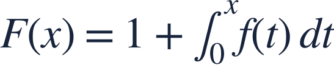
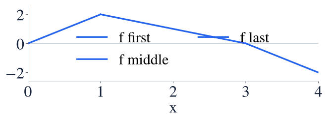

Accumulation function graphs
누적함수 그래프

An accumulation graph rises where its integrand is positive, even if the integrand is falling.
피적분함수가 감소하더라도 양수이면 누적함수는 증가합니다.

An accumulation graph rises where its integrand is positive, even if the integrand is falling.
피적분함수가 감소하더라도 양수이면 누적함수는 증가합니다.
The continuous piecewise-linear f joins (0,0), (1,2), (3,0), (4,−2).
연속인 꺾은선 f는 (0,0), (1,2), (3,0), (4,−2)를 잇습니다.

Read f as the slope of F, not as the height of F.
f를 F의 높이가 아니라 F의 기울기로 읽으세요.
The positive triangle adds 3 to the initial value 1.
양의 삼각형 넓이 3을 초기값 1에 더합니다.
The final negative triangle subtracts one.
마지막 음의 삼각형 넓이 1을 뺍니다.
f changes from positive to negative, so F turns from increasing to decreasing.
f가 양수에서 음수로 바뀌므로 F는 증가에서 감소로 바뀝니다.
F has an extremum where f changes sign, not necessarily where f has its own extremum.
F의 극값은 f 자체의 극값보다 f의 부호 변화로 판단합니다.
Using the same graph, find F′(2) and F″(2).
같은 그래프로 F′(2)와 F″(2)를 구하세요.